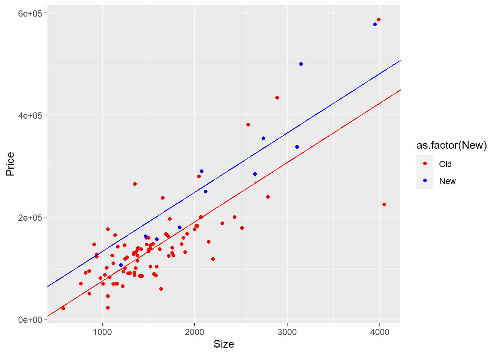
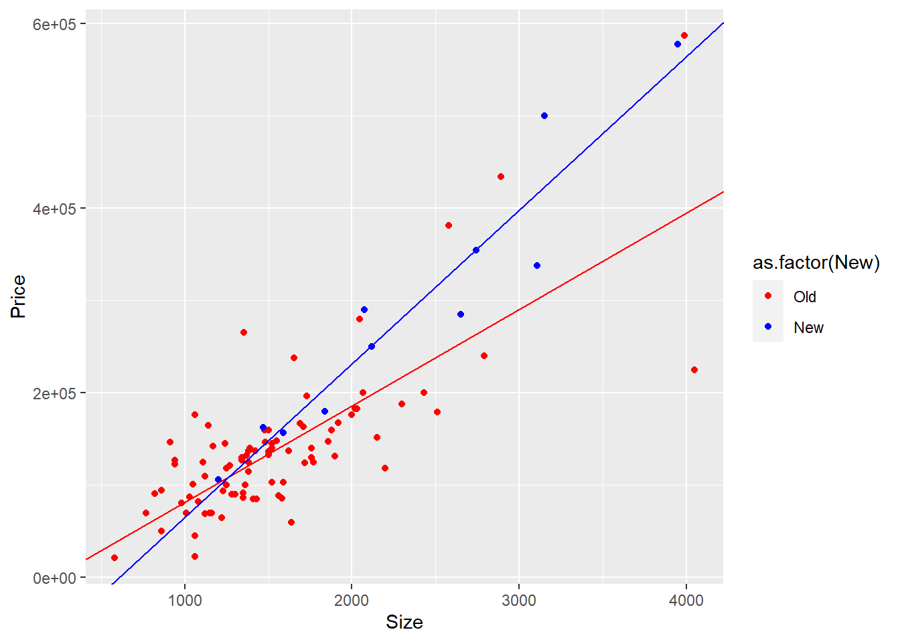

Code
x1=1240
x2=18000
pred_price<--10536+53.8*x1+2.84*x2
pred_price[1] 107296Young Soo Choi
April 25, 2023
When the given values for size of home and size of lot are 1240 and 18000, the predicted selling price is 107296.
And the residual is 37704. This means that, in the given model, the selling price that cannot be explained by size of home and los is 37704.
It is increasing by 53.8. Since the coefficient of x1(size of home) is 53.8, if x2(size of lot) is constant, y(predicted selling price) increases by 53.8.
As discussed above, when x2 is constant and x1 increases by 1 unit, y increases by 53.8. Likewise, if x1 is constant and x2 increases by one unit, y increases by 2.84, the coefficient of x2 in the above equation.
Using this relationship, the amount of increase in x2 that gives the same effect as the increase in x1 by one unit is 18.94. That is, if x2 increases 18.94, y increases as x1 increases by one unit.
Warning: package 'alr4' was built under R version 4.2.3Loading required package: carLoading required package: carDataLoading required package: effectsWarning: package 'effects' was built under R version 4.2.3lattice theme set by effectsTheme()
See ?effectsTheme for details.It is necessary to implement a t-test to verify the hypothesis that the average salary of men and women is the same.
Welch Two Sample t-test
data: salary by sex
t = 1.7744, df = 21.591, p-value = 0.09009
alternative hypothesis: true difference in means between group Male and group Female is not equal to 0
95 percent confidence interval:
-567.8539 7247.1471
sample estimates:
mean in group Male mean in group Female
24696.79 21357.14 Using r’s t.test function, the alternative hypothesis is that the difference between the two will not be zero (that is, there is a salary difference between men and women), and the null hypothesis is that there is no salary difference between men and women. However, as a result of the t-test, the p value is greater than 0.05, so the null hypothesis cannot be rejected at the significance level of 0.05. This means that there is no salary difference between men and women.
Call:
lm(formula = salary ~ ., data = salary)
Residuals:
Min 1Q Median 3Q Max
-4045.2 -1094.7 -361.5 813.2 9193.1
Coefficients:
Estimate Std. Error t value Pr(>|t|)
(Intercept) 15746.05 800.18 19.678 < 2e-16 ***
degreePhD 1388.61 1018.75 1.363 0.180
rankAssoc 5292.36 1145.40 4.621 3.22e-05 ***
rankProf 11118.76 1351.77 8.225 1.62e-10 ***
sexFemale 1166.37 925.57 1.260 0.214
year 476.31 94.91 5.018 8.65e-06 ***
ysdeg -124.57 77.49 -1.608 0.115
---
Signif. codes: 0 '***' 0.001 '**' 0.01 '*' 0.05 '.' 0.1 ' ' 1
Residual standard error: 2398 on 45 degrees of freedom
Multiple R-squared: 0.855, Adjusted R-squared: 0.8357
F-statistic: 44.24 on 6 and 45 DF, p-value: < 2.2e-16The results of deriving multiple regression equations for wages using all variables were obtained. According to the above equation, salary is 1166.37 high if the sex is female.
Using the above values, the 95% confidence interval of the sex difference between men and women is from -697.8 to 3030.6. Since this confidence interval includes 0, it can be said that the coefficient of the regression equation for sex is not significant at the 5% level of significance.
In summary, the multiple regression equation derived above can be expressed as follows.
Salary = 15746.1 + 1388.6degreePhD + 5292.4rankAssoc + 11118.8rankProf + 1166.4sexFemale + 476.3years -124.6ysdeg
Prior to the discussion, all significance levels are set at 0.05.
For degree, (a) salary difference between masters and phD is not statistically significant.(p-value is greater than 0.05) (b) And according to the coefficient, the salary of the phD is greater than masters’ by 1388.7. Taken together, when other variables are the same, the Ph.D. owner is paid1388.7 higher than the master’s, but this is not statistically significant.
For rank, (a) salary difference between Asst, Assoc, and Prof is statistically significant.(p-value is less than 0.05) (b) And according to the coefficient, the salary of the Assoc is greater than Asst’s by 5292.4 and the salary of the Prof is greater than Asst’s by 11118.8. Overall, the associate professor receives 5292.4 higher salary than the assistant professor, and the professor receives 11118.8 higher salary than the assistant professor, when any other variables are the same. And it is statistically significant.
For sex, (a) salary difference between male and female is not statistically significant.(p-value is greater than 0.05) (b) And according to the coefficient, the salary of the female is greater than male’s by 1166.4. In general, when other variables are constant, female professors are paid 1166.4 higher than male professors, but this is not statistically significant.
For year, (a) coefficient of year is statistically significant.(p-value is less than 0.05) (b) And according to the coefficient, when the number of years increases by 1, the salary increases by 476.3. In other words, if the number of years of service increases by one year, the salary increases by 476.3 when other variables are constant, which is statistically significant.
For ysdeg, (a) coefficient of ysdeg is not statistically significant.(p-value is greater than 0.05) (b) And according to the coefficient, when the number of ysdeg increases by 1, the salary decreases by 124.6. In the end, according to this model, if years since highest degree increases when other variables are the same, income decreases by 124.6, but this is not statistically significant.
The baseline can be changed using the relevel function. Through this, Assoc was changed to a baseline instead of Asst and a multiple regression model was derived.
Call:
lm(formula = salary ~ degree + rank.a + sex + year + ysdeg, data = salary)
Residuals:
Min 1Q Median 3Q Max
-4045.2 -1094.7 -361.5 813.2 9193.1
Coefficients:
Estimate Std. Error t value Pr(>|t|)
(Intercept) 21038.41 1109.12 18.969 < 2e-16 ***
degreePhD 1388.61 1018.75 1.363 0.180
rank.aAsst -5292.36 1145.40 -4.621 3.22e-05 ***
rank.aProf 5826.40 1012.93 5.752 7.28e-07 ***
sexFemale 1166.37 925.57 1.260 0.214
year 476.31 94.91 5.018 8.65e-06 ***
ysdeg -124.57 77.49 -1.608 0.115
---
Signif. codes: 0 '***' 0.001 '**' 0.01 '*' 0.05 '.' 0.1 ' ' 1
Residual standard error: 2398 on 45 degrees of freedom
Multiple R-squared: 0.855, Adjusted R-squared: 0.8357
F-statistic: 44.24 on 6 and 45 DF, p-value: < 2.2e-16Checking the above coefficients, salary decreases by 5292.4 compared to assoc when it is asst. Prof has a higher salary by 5826.4 compared to assoc. Comparing prop to asst, the difference is 11118.8, which is the same as the difference when the baseline is not changed. In other words, even if the baseline is changed, only the form of the multiple regression model changes and the meaning is the same.
Except for the rank variable, multiple regression equations were derived again.
Call:
lm(formula = salary ~ degree + sex + year + ysdeg, data = salary)
Residuals:
Min 1Q Median 3Q Max
-8146.9 -2186.9 -491.5 2279.1 11186.6
Coefficients:
Estimate Std. Error t value Pr(>|t|)
(Intercept) 17183.57 1147.94 14.969 < 2e-16 ***
degreePhD -3299.35 1302.52 -2.533 0.014704 *
sexFemale -1286.54 1313.09 -0.980 0.332209
year 351.97 142.48 2.470 0.017185 *
ysdeg 339.40 80.62 4.210 0.000114 ***
---
Signif. codes: 0 '***' 0.001 '**' 0.01 '*' 0.05 '.' 0.1 ' ' 1
Residual standard error: 3744 on 47 degrees of freedom
Multiple R-squared: 0.6312, Adjusted R-squared: 0.5998
F-statistic: 20.11 on 4 and 47 DF, p-value: 1.048e-09There are many changes. First of all, Ph.D. ownership acts in the direction of reducing salaries, which is statistically significant (all significance levels are 0.05), and gender has also changed its direction of influence. It was found that women’s salary was lower than that of men, but it was not statistically significant. The influence of ysdeg also changed, and when rank was included, this variable had a negative effect on salary, but now it has a positive effect. And this result is also significant. Finally, year did not change the direction of influence, but the coefficient was slightly reduced. be statistically significant as well.
First, a new variable(ysdeg.dean) with an “old” when ysdeg exceeds 15 and a “new” if not was created.
Attaching package: 'dplyr'The following object is masked from 'package:car':
recodeThe following objects are masked from 'package:stats':
filter, lagThe following objects are masked from 'package:base':
intersect, setdiff, setequal, unionNext, in order to check the multicollinearity, the vif value was checked using the vif function.
GVIF Df GVIF^(1/(2*Df))
degree 1.341872 1 1.158392
rank 2.964200 2 1.312130
sex 1.295820 1 1.138341
year 1.726209 1 1.313853
ysdeg.dean 2.678486 1 1.636608Here, there is no value over 5, so it seems that there is no variable with strong multicollinearity. Therefore, I derived multiple regression equations including all variables and confirmed the effect of ysdeg reclassified into old and new.
Call:
lm(formula = salary ~ degree + rank + sex + year + ysdeg.dean,
data = new.sal)
Residuals:
Min 1Q Median 3Q Max
-3403.3 -1387.0 -167.0 528.2 9233.8
Coefficients:
Estimate Std. Error t value Pr(>|t|)
(Intercept) 15491.84 806.32 19.213 < 2e-16 ***
degreePhD 818.93 797.48 1.027 0.3100
rankAssoc 4972.66 997.17 4.987 9.61e-06 ***
rankProf 11096.95 1191.00 9.317 4.54e-12 ***
sexFemale 907.14 840.54 1.079 0.2862
year 434.85 78.89 5.512 1.65e-06 ***
ysdeg.deanold -2163.46 1072.04 -2.018 0.0496 *
---
Signif. codes: 0 '***' 0.001 '**' 0.01 '*' 0.05 '.' 0.1 ' ' 1
Residual standard error: 2362 on 45 degrees of freedom
Multiple R-squared: 0.8594, Adjusted R-squared: 0.8407
F-statistic: 45.86 on 6 and 45 DF, p-value: < 2.2e-16As a result of the confirmation, if all other variables were the same, if ysdeg was old, the salary was 2163.5 lower than if it was new. In addition, the p value of this coefficient is 0.0496, so it is statistically significant at the significance level of 0.05. In other words, the perception that the new dean is more generous in salary is thought to be grounded.
Warning: package 'smss' was built under R version 4.2.3[1] "case" "Taxes" "Beds" "Baths" "New" "Price" "Size" [1] 100A multiple regression model was derived with Size and New as independent variables and price as dependent variables.
Call:
lm(formula = Price ~ Size + New, data = house.selling.price)
Residuals:
Min 1Q Median 3Q Max
-205102 -34374 -5778 18929 163866
Coefficients:
Estimate Std. Error t value Pr(>|t|)
(Intercept) -40230.867 14696.140 -2.738 0.00737 **
Size 116.132 8.795 13.204 < 2e-16 ***
New 57736.283 18653.041 3.095 0.00257 **
---
Signif. codes: 0 '***' 0.001 '**' 0.01 '*' 0.05 '.' 0.1 ' ' 1
Residual standard error: 53880 on 97 degrees of freedom
Multiple R-squared: 0.7226, Adjusted R-squared: 0.7169
F-statistic: 126.3 on 2 and 97 DF, p-value: < 2.2e-16As a result, as the size increases by one unit, the price increases by 116.1, and in the case of New, the price is 57736.3 higher than that of Old. These are all statistically significant (significance level 0.05).
For new home: Price = 17505.42 + 116.132Size For old home; Price = -40230.867 + 116.132Size
This relationship can also be seen in the figure below.
library(ggplot2)
ggplot(house.selling.price, aes(Size, Price, color=as.factor(New)),
xlab="Size",
ylab="Price") +
geom_point() +
scale_color_manual(values = c("red", "blue"), label = c("Old", "New")) +
geom_abline(slope=116.132, intercept = -40230.867, color ="red") +
geom_abline(slope=116.132, intercept = -40230.867+57736.283, color="blue")
In interpretation, regardless of whether the house is new or old, the increase in price is the same as the unit increase in size. However, the intercept of new is 17505.42, which is as large as 57736.283 compared to the intercept of old. That is, the slope of the regression line representing each case is the same, but the new regression line is vertically higher than the old regression line by 57736.283.
[1] 365901.4[1] 308165.1According to fitted model, when size is 3000, predicted selling price for a new home is 365901.4 and for an old home is 308165.1
Call:
lm(formula = Price ~ Size * New, data = house.selling.price)
Residuals:
Min 1Q Median 3Q Max
-175748 -28979 -6260 14693 192519
Coefficients:
Estimate Std. Error t value Pr(>|t|)
(Intercept) -22227.808 15521.110 -1.432 0.15536
Size 104.438 9.424 11.082 < 2e-16 ***
New -78527.502 51007.642 -1.540 0.12697
Size:New 61.916 21.686 2.855 0.00527 **
---
Signif. codes: 0 '***' 0.001 '**' 0.01 '*' 0.05 '.' 0.1 ' ' 1
Residual standard error: 52000 on 96 degrees of freedom
Multiple R-squared: 0.7443, Adjusted R-squared: 0.7363
F-statistic: 93.15 on 3 and 96 DF, p-value: < 2.2e-16In the regression model that includes the interaction term, the price is rather lowered when new(-78527.5). However, according to the interaction term between Size and new, in the case of new, the sales price increases by 61.916 as the size increases by one unit. Even if it is new, the price is lower than old until it reaches a specific size, and it can be seen that the price of new is higher than old only when it exceeds that specific size.
For new home: Price = -100755.3 + 166.354Size For old home; Price = -22227.808 + 104.438Size
ggplot(house.selling.price, aes(Size, Price, color=as.factor(New)),
xlab="Size",
ylab="Price") +
geom_point() +
scale_color_manual(values = c("red", "blue"), label = c("Old", "New")) +
geom_abline(slope=104.438, intercept = -22227.808, color ="red") +
geom_abline(slope=166.354, intercept = -100755.3, color="blue")
As shown in the figure, in the case of new, the intercept is lower than old, but the slope of new is larger than that of old.
[1] 398306.7[1] 291086.2Predicted selling price of new home is 398306.7 and of new home is 291086.2.
[1] 148775.7[1] 134429.2Predicted selling price of new home is 148775.7 and of new home is 134429.2. The price difference is smaller than when the size is 3000. In the case of new, the slope of the model is larger than that of old, so the larger the size, the higher the price of new. In other words, as the size increases, the price difference between new and old will gradually increase, which can be seen from the regression equation between the two and the graph above.
Looking at the r-square value of each model, the r-square value of the model including the interaction term is larger(model with interaction term: 0.7443, model without it: 0.7226). Even looking at the adjusted r-square value that corrects the increased amount of explanation as the variable increasesr(model with interaction term: 0.7363, model without it: 0.7169), it can be said that the explanatory power of the model including the interaction term is higher. However, which model to use and prefer is not determined simply by these explanations. In this case, it was easy to compare the cases of new and old by simply modifying the expression, but if the number of variables increases or there are more than three categories of nominal variables, it will be increasingly difficult to derive or interpret the regression model. In other words, in selecting models and variables, various variables such as interpretability as well as simple explanatory power should be considered.
For this case, I prefer a model with interaction terms. It is interesting that the older the house, the smaller the price increase due to the increase in its area, in that the two variables interact to change the influence of the variable.
---
title: "Homework 4"
author: "Young Soo Choi"
description: "hw4"
date: "04/25/2023"
format:
html:
toc: true
code-fold: true
code-copy: true
code-tools: true
categories:
- hw4
---
# Question 1
## (A)
```{r}
x1=1240
x2=18000
pred_price<--10536+53.8*x1+2.84*x2
pred_price
```
When the given values for size of home and size of lot are 1240 and 18000, the predicted selling price is 107296.
```{r}
145000-pred_price
```
And the residual is 37704. This means that, in the given model, the selling price that cannot be explained by size of home and los is 37704.
## (B)
It is increasing by 53.8. Since the coefficient of x1(size of home) is 53.8, if x2(size of lot) is constant, y(predicted selling price) increases by 53.8.
## (C)
As discussed above, when x2 is constant and x1 increases by 1 unit, y increases by 53.8. Likewise, if x1 is constant and x2 increases by one unit, y increases by 2.84, the coefficient of x2 in the above equation.
```{r}
53.8/2.84
```
Using this relationship, the amount of increase in x2 that gives the same effect as the increase in x1 by one unit is 18.94. That is, if x2 increases 18.94, y increases as x1 increases by one unit.
# Question 2
```{r}
# data loading
library(alr4)
data(salary)
```
```{r}
colnames(salary)
```
## (A)
It is necessary to implement a t-test to verify the hypothesis that the average salary of men and women is the same.
```{r}
t.test(salary~sex, data=salary)
```
Using r's t.test function, the alternative hypothesis is that the difference between the two will not be zero (that is, there is a salary difference between men and women), and the null hypothesis is that there is no salary difference between men and women. However, as a result of the t-test, the p value is greater than 0.05, so the null hypothesis cannot be rejected at the significance level of 0.05. This means that there is no salary difference between men and women.
## (B)
```{r}
sal.lm<-lm(salary~., data=salary)
summary(sal.lm)
```
The results of deriving multiple regression equations for wages using all variables were obtained. According to the above equation, salary is 1166.37 high if the sex is female.
```{r}
confint(sal.lm, "sexFemale", level=0.95)
```
Using the above values, the 95% confidence interval of the sex difference between men and women is from -697.8 to 3030.6. Since this confidence interval includes 0, it can be said that the coefficient of the regression equation for sex is not significant at the 5% level of significance.
## (C)
In summary, the multiple regression equation derived above can be expressed as follows.
Salary = 15746.1 + 1388.6*degreePhD + 5292.4*rankAssoc + 11118.8*rankProf + 1166.4*sexFemale + 476.3*years -124.6*ysdeg
Prior to the discussion, all significance levels are set at 0.05.
For degree, (a) salary difference between masters and phD is not statistically significant.(p-value is greater than 0.05) (b) And according to the coefficient, the salary of the phD is greater than masters' by 1388.7. Taken together, when other variables are the same, the Ph.D. owner is paid1388.7 higher than the master's, but this is not statistically significant.
For rank, (a) salary difference between Asst, Assoc, and Prof is statistically significant.(p-value is less than 0.05) (b) And according to the coefficient, the salary of the Assoc is greater than Asst's by 5292.4 and the salary of the Prof is greater than Asst's by 11118.8. Overall, the associate professor receives 5292.4 higher salary than the assistant professor, and the professor receives 11118.8 higher salary than the assistant professor, when any other variables are the same. And it is statistically significant.
For sex, (a) salary difference between male and female is not statistically significant.(p-value is greater than 0.05) (b) And according to the coefficient, the salary of the female is greater than male's by 1166.4. In general, when other variables are constant, female professors are paid 1166.4 higher than male professors, but this is not statistically significant.
For year, (a) coefficient of year is statistically significant.(p-value is less than 0.05) (b) And according to the coefficient, when the number of years increases by 1, the salary increases by 476.3.
In other words, if the number of years of service increases by one year, the salary increases by 476.3 when other variables are constant, which is statistically significant.
For ysdeg, (a) coefficient of ysdeg is not statistically significant.(p-value is greater than 0.05) (b) And according to the coefficient, when the number of ysdeg increases by 1, the salary decreases by 124.6. In the end, according to this model, if years since highest degree increases when other variables are the same, income decreases by 124.6, but this is not statistically significant.
## (D)
The baseline can be changed using the relevel function. Through this, Assoc was changed to a baseline instead of Asst and a multiple regression model was derived.
```{r}
salary$rank.a <- relevel(salary$rank, ref = "Assoc")
sal.lm.2<-lm(salary~degree+rank.a+sex+year+ysdeg, data=salary)
summary(sal.lm.2)
```
```{r}
5826.40-(-5292.36)
```
Checking the above coefficients, salary decreases by 5292.4 compared to assoc when it is asst. Prof has a higher salary by 5826.4 compared to assoc. Comparing prop to asst, the difference is 11118.8, which is the same as the difference when the baseline is not changed. In other words, even if the baseline is changed, only the form of the multiple regression model changes and the meaning is the same.
## (E)
Except for the rank variable, multiple regression equations were derived again.
```{r}
sal.lm.nr<-lm(salary~degree+sex+year+ysdeg, data=salary)
summary(sal.lm.nr)
```
There are many changes. First of all, Ph.D. ownership acts in the direction of reducing salaries, which is statistically significant (all significance levels are 0.05), and gender has also changed its direction of influence. It was found that women's salary was lower than that of men, but it was not statistically significant. The influence of ysdeg also changed, and when rank was included, this variable had a negative effect on salary, but now it has a positive effect. And this result is also significant. Finally, year did not change the direction of influence, but the coefficient was slightly reduced. be statistically significant as well.
## (F)
First, a new variable(ysdeg.dean) with an "old" when ysdeg exceeds 15 and a "new" if not was created.
```{r}
library(dplyr)
new.sal<-salary %>% mutate(ysdeg.dean = ifelse(ysdeg>15, "old", "new"))
```
Next, in order to check the multicollinearity, the vif value was checked using the vif function.
```{r}
library(car)
vif<-vif(lm(salary~degree+rank+sex+year+ysdeg.dean, data=new.sal))
vif
```
Here, there is no value over 5, so it seems that there is no variable with strong multicollinearity. Therefore, I derived multiple regression equations including all variables and confirmed the effect of ysdeg reclassified into old and new.
```{r}
sal.lm.on<-lm(salary~degree+rank+sex+year+ysdeg.dean, data=new.sal)
summary(sal.lm.on)
```
As a result of the confirmation, if all other variables were the same, if ysdeg was old, the salary was 2163.5 lower than if it was new. In addition, the p value of this coefficient is 0.0496, so it is statistically significant at the significance level of 0.05. In other words, the perception that the new dean is more generous in salary is thought to be grounded.
# Question 3
```{r}
library(smss)
data(house.selling.price)
colnames(house.selling.price)
nrow(house.selling.price)
```
## (A)
A multiple regression model was derived with Size and New as independent variables and price as dependent variables.
```{r}
lm.3.a<-lm(Price~Size+New, data=house.selling.price)
summary(lm.3.a)
```
As a result, as the size increases by one unit, the price increases by 116.1, and in the case of New, the price is 57736.3 higher than that of Old. These are all statistically significant (significance level 0.05).
## (B)
For new home: Price = 17505.42 + 116.132*Size
For old home; Price = -40230.867 + 116.132*Size
This relationship can also be seen in the figure below.
```{r}
library(ggplot2)
ggplot(house.selling.price, aes(Size, Price, color=as.factor(New)),
xlab="Size",
ylab="Price") +
geom_point() +
scale_color_manual(values = c("red", "blue"), label = c("Old", "New")) +
geom_abline(slope=116.132, intercept = -40230.867, color ="red") +
geom_abline(slope=116.132, intercept = -40230.867+57736.283, color="blue")
```
In interpretation, regardless of whether the house is new or old, the increase in price is the same as the unit increase in size. However, the intercept of new is 17505.42, which is as large as 57736.283 compared to the intercept of old. That is, the slope of the regression line representing each case is the same, but the new regression line is vertically higher than the old regression line by 57736.283.
## (C)
```{r}
Size=3000
new.home.Price <- 17505.42 + 116.132*Size
old.home.Price <- -40230.867 + 116.132*Size
new.home.Price
old.home.Price
```
According to fitted model, when size is 3000, predicted selling price for a new home is 365901.4 and for an old home is 308165.1
## (D)
```{r}
lm.3.d<-lm(Price~Size*New, data=house.selling.price)
summary(lm.3.d)
```
In the regression model that includes the interaction term, the price is rather lowered when new(-78527.5). However, according to the interaction term between Size and new, in the case of new, the sales price increases by 61.916 as the size increases by one unit. Even if it is new, the price is lower than old until it reaches a specific size, and it can be seen that the price of new is higher than old only when it exceeds that specific size.
## (E)
For new home: Price = -100755.3 + 166.354*Size
For old home; Price = -22227.808 + 104.438*Size
```{r}
ggplot(house.selling.price, aes(Size, Price, color=as.factor(New)),
xlab="Size",
ylab="Price") +
geom_point() +
scale_color_manual(values = c("red", "blue"), label = c("Old", "New")) +
geom_abline(slope=104.438, intercept = -22227.808, color ="red") +
geom_abline(slope=166.354, intercept = -100755.3, color="blue")
```
As shown in the figure, in the case of new, the intercept is lower than old, but the slope of new is larger than that of old.
## (F)
```{r}
Size=3000
new.home.Price.2 <- -100755.3 + 166.354*Size
old.home.Price.2 <- -22227.808 + 104.438*Size
new.home.Price.2
old.home.Price.2
```
Predicted selling price of new home is 398306.7 and of new home is 291086.2.
## (G)
```{r}
Size=1500
new.home.Price.2 <- -100755.3 + 166.354*Size
old.home.Price.2 <- -22227.808 + 104.438*Size
new.home.Price.2
old.home.Price.2
```
Predicted selling price of new home is 148775.7 and of new home is 134429.2. The price difference is smaller than when the size is 3000.
In the case of new, the slope of the model is larger than that of old, so the larger the size, the higher the price of new. In other words, as the size increases, the price difference between new and old will gradually increase, which can be seen from the regression equation between the two and the graph above.
## (H)
Looking at the r-square value of each model, the r-square value of the model including the interaction term is larger(model with interaction term: 0.7443, model without it: 0.7226). Even looking at the adjusted r-square value that corrects the increased amount of explanation as the variable increasesr(model with interaction term: 0.7363, model without it: 0.7169), it can be said that the explanatory power of the model including the interaction term is higher.
However, which model to use and prefer is not determined simply by these explanations. In this case, it was easy to compare the cases of new and old by simply modifying the expression, but if the number of variables increases or there are more than three categories of nominal variables, it will be increasingly difficult to derive or interpret the regression model.
In other words, in selecting models and variables, various variables such as interpretability as well as simple explanatory power should be considered.
For this case, I prefer a model with interaction terms. It is interesting that the older the house, the smaller the price increase due to the increase in its area, in that the two variables interact to change the influence of the variable.